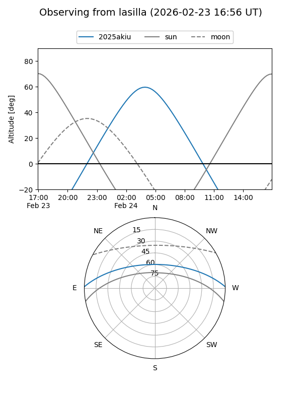
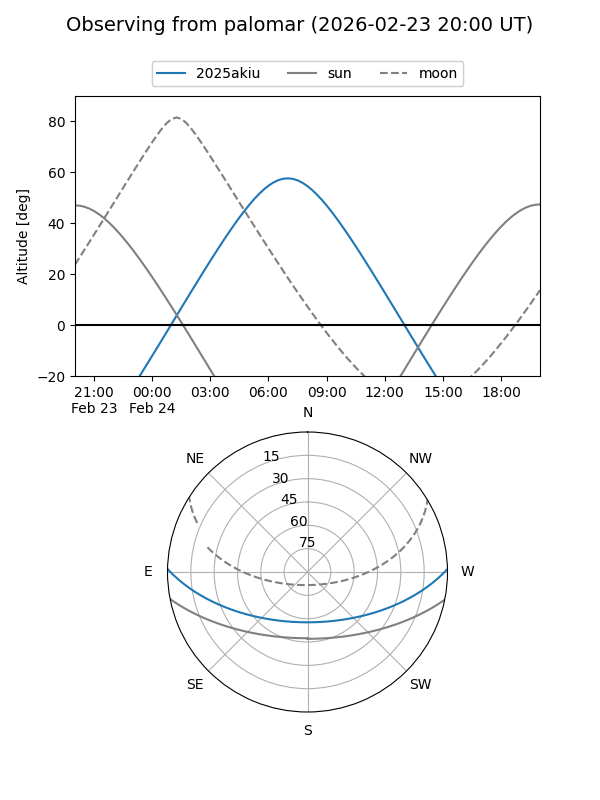
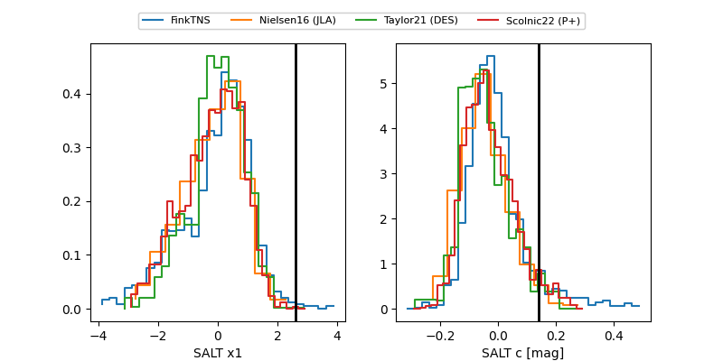

2025akiu
Target 2025akiu at 2025-12-31 17:00
Aliases and brokers:
FINK:
Lasair:
ALeRCE:
TNS:
YSE:
alt names
ZTF25acgfdic (ztf,fink_ztf)
2025akiu (tns,yse)
PS25lak (panstarrs)
Coordinates:
equatorial (ra, dec) = 141.8506,+1.12681
equatorial (HMS+DMS) = 09:27:24.15,+01:07:36.50
galactic (l, b) = (232.0487,+34.66933)
Flags:
Photometry:
last ztfg=20.10, ztfr=20.28
4 ztfg, 1 ztfr detections
Lightcurve

Visibility


Additional plots
